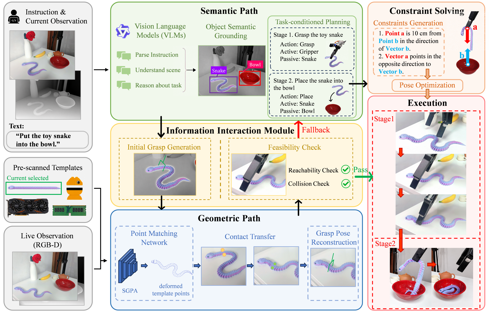

PATH 01
Semantic reasoning
A VLM decomposes the instruction into stages, identifies active and passive objects, and grounds task-relevant regions. Spatial constraints are optimized into executable poses for later manipulation stages.
DualManip: Agentic Dynamic Manipulation via Dual-Path Semantic Reasoning and Geometric Adaptation
A vision-language system that keeps task intent in one path and updates the grasp in another—so moving or deforming objects do not force a full semantic replan every time.
DualManip separates high-level reasoning from execution-time geometry. The two paths meet at an Information Interaction Module that decides whether to execute an updated grasp or return to semantic reasoning.
A VLM decomposes the instruction into stages, identifies active and passive objects, and grounds task-relevant regions. Spatial constraints are optimized into executable poses for later manipulation stages.
A template-based correspondence network matches live RGB-D points to the object reference. Two intended grasp contacts transfer across observations, allowing the gripper pose to be reconstructed as the object moves or deforms.
Initial grasp generation, correspondence confidence, reachability and collision checks, with semantic replanning when an update cannot be executed safely.
The semantic path establishes a task-conditioned action. The geometric path preserves its intended contacts through scene change. A shared module checks each pose before execution.

Parse instruction stages and ground active, passive, and functional object regions.
Use a pre-scanned template and shape-adaptive point correspondences for each RGB-D observation.
Map two task-relevant contacts to the current object and reconstruct a gripper pose.
Validate correspondence, reachability, and collision safety; replan when needed.
Real-world evaluation covers deformable, articulated, and rigid objects. The strongest separation appears when the scene changes continuously, where repeated high-level reasoning cannot keep pace.
DualManip across snake placement, toy positioning, and block placement.
Matched CLEA's success rate while avoiding a full agentic update for valid geometric changes.
Average per DualManip update; GPT-based CLEA took 6.376 s in the paper's latency evaluation.
| Task | DualManip | ReKep | OmniManip | CLEA | Open-loop |
|---|---|---|---|---|---|
| Snake placement | 8/15 | 3/15 | 1/15 | 0/15 | 0/15 |
| Toy positioning | 7/15 | 4/15 | 0/15 | 0/15 | 0/15 |
| Block placement | 9/15 | 6/15 | 7/15 | 0/15 | 0/15 |
| Mean success | 53.3% | 28.9% | 17.8% | 0% | 0% |
* The ≈46× comparison uses the paper's 6.376 s GPT-based CLEA latency and 138.7 ms DualManip latency under a single scene change. These figures measure internal adaptation, excluding shared downstream execution modules.
Three general manipulation tasks are evaluated in static, single-change, and continuous settings. Three PC assembly tasks are evaluated in the static setting.
Put a soft snake into a bowl while its shape and position change.
Position a toy between two other figurines as its configuration changes.
Place a block fish into a bucket after or during displacement.
Insert a memory module into its chassis slot.
Insert a graphics card into its chassis slot.
Place a cooling fan at its designated mounting location.
Architecture, shape-adaptive correspondence learning, contact-based grasp reconstruction, feasibility routing, and real-robot evaluation.
Download paperAuthor and code links can be added once they are ready for public release.